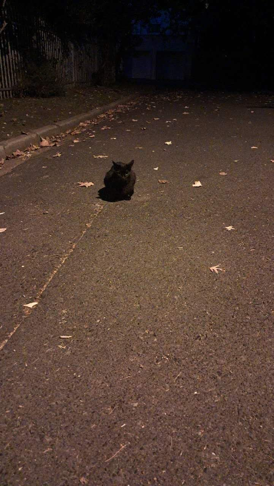
Original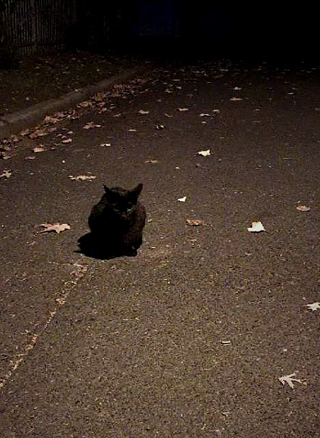
Edited01Night Road
The cat is almost the same value as the road, so the picture works by separating two darknesses with the pale patch of asphalt behind it. I put the animal on the left third and let the empty road fill the rest of the frame, so the eye finds the small black shape and then keeps travelling down the street. That is the theme in one frame: at street level, the night belongs to whatever is still out. In the edit I cropped away the empty foreground, deepened the blacks, cooled the shadows and added a vignette to hold the corners down.
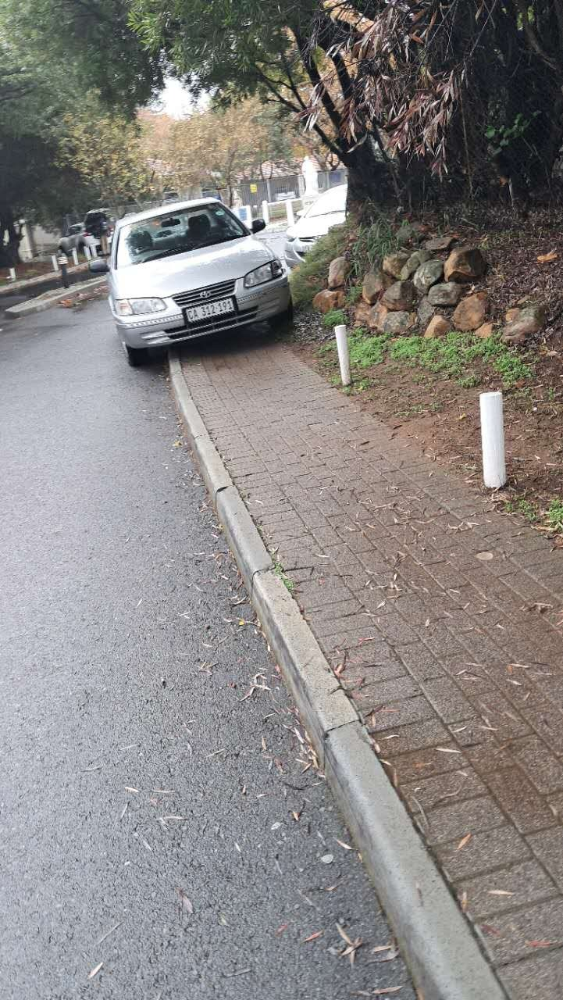
Original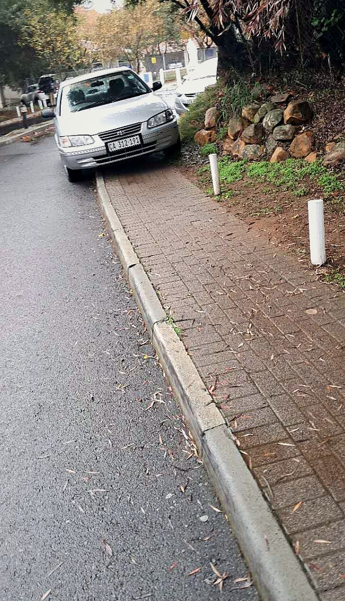
Edited02The Kerb
The kerb leaves the bottom right corner and runs up to the parked car, and the brick paving repeats the same diagonal, so the line does the walking for you. I crouched low to widen the near end and narrow the far end, which makes the street feel longer than it is. A kerb is the most ordinary edge in the city, which is exactly why it belongs in this set. I cropped out the sky and the far pavement, lifted the contrast in the brick and cooled the grey of the road.
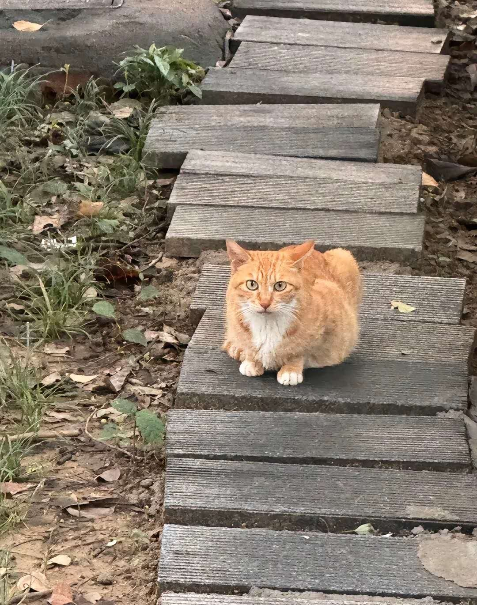
Original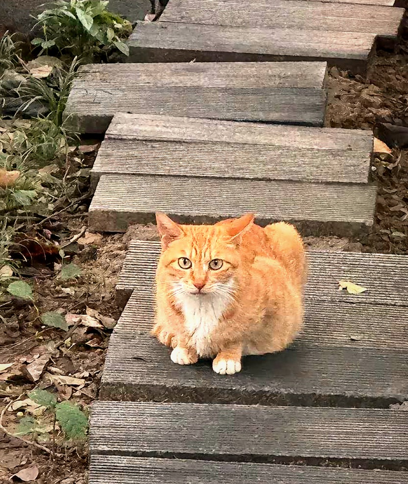
Edited03Steps
The cat sits on the intersection of the right and lower thirds, and the plank edges run diagonally back to the top right corner, so the whole stairway points at it. Leaving the left side empty keeps the cat off-centre and makes it look like it is waiting for something. I cropped in from the left and the bottom, warmed the tone, added contrast and sharpened the planks so the texture leads the eye up to the animal.
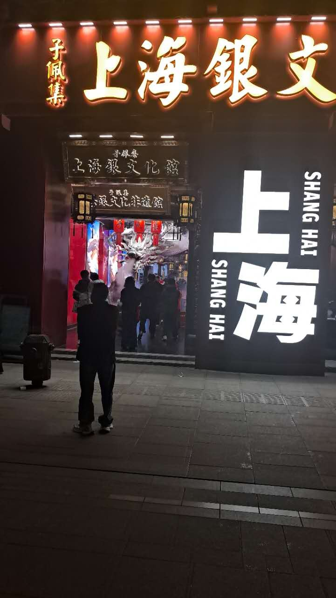
Original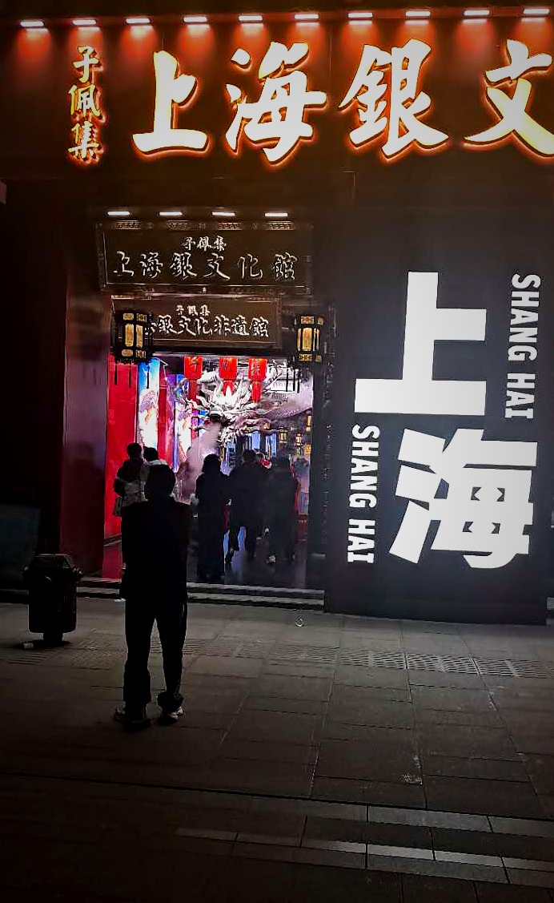
Edited04Doorway
The lit entrance is a frame inside a frame: dark wall on both sides, the white characters closing it on the right, the lanterns and the crowd sitting inside the opening. I stood on the pavement so the doorway sits at eye height, and the lone figure on the left gives the opening its scale. A shopfront is the threshold everyone crosses, so it belongs here. In the edit I cropped away the empty street, lifted the gold of the sign, cooled the blacks and used a vignette to leave the doorway as the only bright thing.
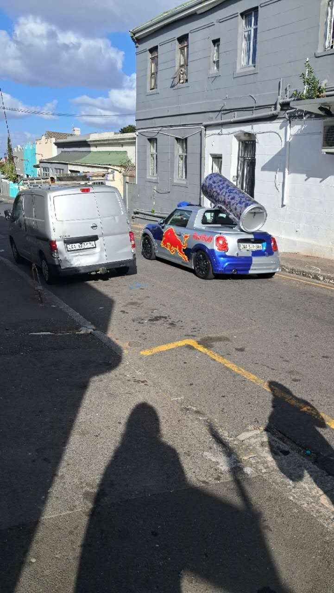
Original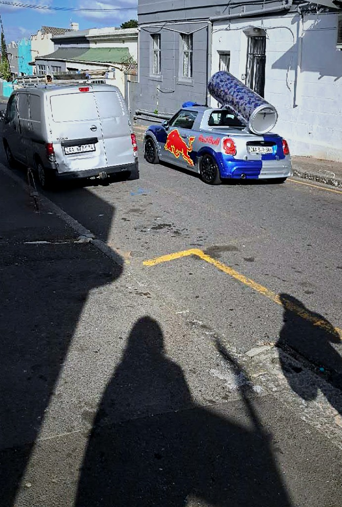
Edited05Two Cars
A grey van on the left and a blue car with a giant can on the right carry roughly equal weight, and the two long shadows in the foreground sit underneath them like a second, darker pair. Nothing is centred, but the frame feels level because the masses answer each other. This is the street at its most ordinary and its most ridiculous at the same time. I cropped the sky down, increased contrast, cooled the asphalt and darkened the edges so the eye stays on the vehicles and the shadows.
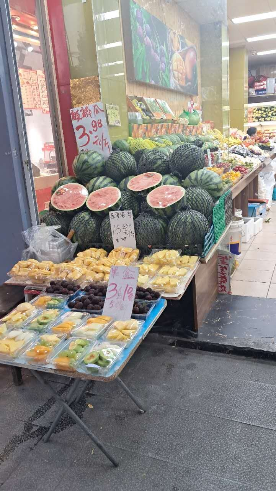
Original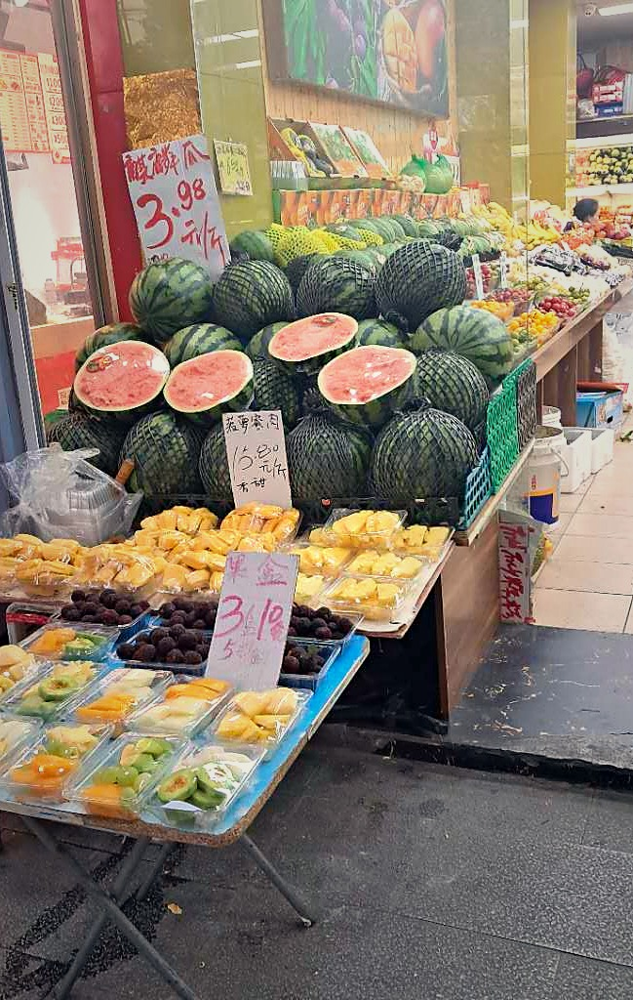
Edited06Fruit Stall
The red of the cut watermelon is the loudest note in the frame, and the deep green rind around it makes the red louder still; the pale yellow trays at the bottom catch the light so the lower half does not go flat. Colour works as a path here: red first, then yellow, then the fruit further back. You only see a stall like this at ground level. I cropped in to remove the shop interior, pushed saturation in the reds and yellows, and added a vignette.